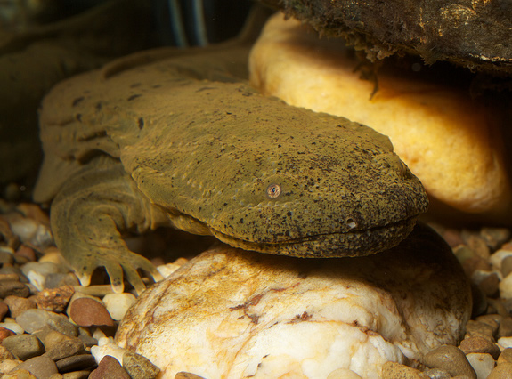

Pennsylvania Registry
Background
Pennsylvania’s WRR was initiated by US Environmental Protection Agency, Region III and the US Army Corps of Engineers, Baltimore District (Corps). Soon thereafter, members from the Philadelphia and Pittsburgh Corps Districts and Pennsylvania Department of Environmental Protection began exploring the creation of a WRR.
Other partners joined, including Pennsylvania's Department of Conservation and Natural Resources, Pennsylvania Department of Transportation, and the US Fish and Wildlife Service.
 The Pennsylvania spatial analyses are different than WRR’s in other states, in that they score opportunities within Pennsylvania’s Service Areas. These areas were identified by Pennsylvania’s Interagency Review Team, formed to address the 2008 Corps and EPA Compensatory Mitigation Rule. Furthermore, the 124 eight-digit watersheds in Pennsylvania will be assigned watershed indices that score historic, current and future threats to their resources. Scores will be used to prioritize watersheds within Service Areas for Pennsylvania’s in-lieu-fee program.
The Pennsylvania spatial analyses are different than WRR’s in other states, in that they score opportunities within Pennsylvania’s Service Areas. These areas were identified by Pennsylvania’s Interagency Review Team, formed to address the 2008 Corps and EPA Compensatory Mitigation Rule. Furthermore, the 124 eight-digit watersheds in Pennsylvania will be assigned watershed indices that score historic, current and future threats to their resources. Scores will be used to prioritize watersheds within Service Areas for Pennsylvania’s in-lieu-fee program.
The PA WRR team acknowledges the substantial support from PASDA, Pennsylvania Spatial Data Access portal, for providing many of the map services utilized on the WRR project.
Additional Resources
Spatial Analyses
Get more information about the spatial analyses and factors selected by the state of Pennsylvania for their models.
View HereListing of Map Services
Get more information about the map layers that are available on the Pennsylvania WRR interactive map
View HereUser Guide
Get more information about the WRR application and how to use it successfully.
View HereContacts
For more information on Pennsylvania's WRR you can contact the following:
| Name | Agency | Phone | |
|---|---|---|---|
| Drew Ames | Pennsylvania Department of Transportation | (717) 705-1481 | johname@pa.gov |
| Cassandra Forsythe | US Army Corps of Engineers, Pittsburgh District | (412) 395-7208 | Cassandra.P.Forsyth@usace.army.mil |
| Mike Dombroskie | US Army Corps of Engineers, Baltimore District | (814) 235-0571 | mike.dombroskie@usace.army.mil |
| David Goerman, Jr. | Pennsylvania Department of Environmental Protection | (717) 772-5971 | dgoerman@pa.gov |
| Jennifer Kagel | US Fish and Wildlife Service | (814) 234-4090 ext. 7461 | jennifer_kagel@fws.gov |
| Gregory Podniesinski, Ph. D. | Pennsylvania Department of Conservation and Natural Resources | (717) 214-7513 | gpodniesin@pa.gov |
| Glenn Weitknecht | US Army Corps of Engineers, Philadelphia District | (570) 842-1044 | glenn.r.weitknecht@usace.army.mil |
Partners